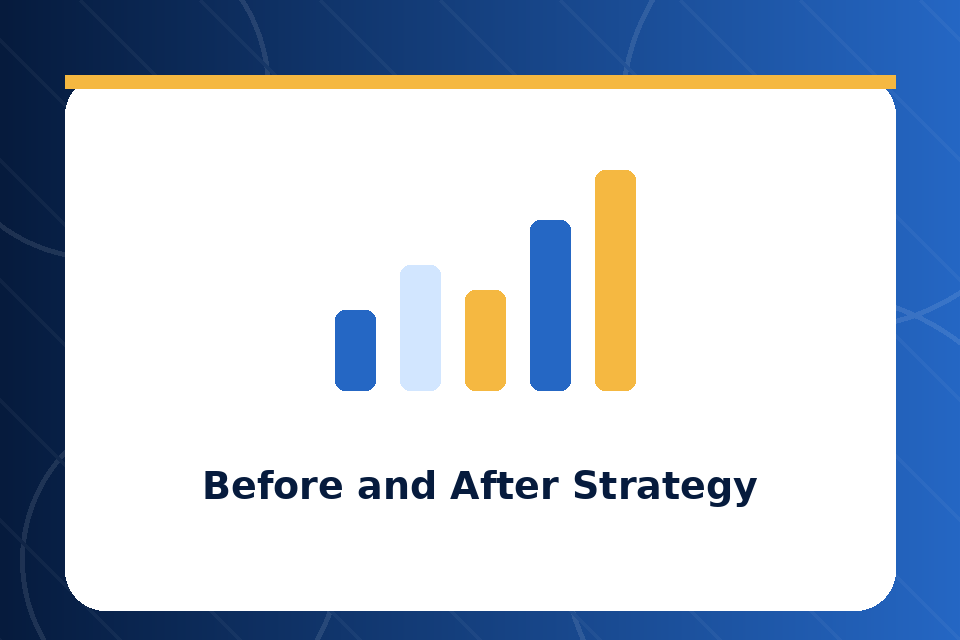

Chart
Before and After Strategy
Review visibility, sales movement, audience growth, engagement, reviews, and campaign activity so you know what is working.
Over the past 8 years, A.Y.M Book Marketing has helped 57 authors market more than 300 books. Here is a look at the kind of results my book marketing strategies produce.
Review visibility, sales movement, audience growth, engagement, reviews, and campaign activity so you know what is working.

Review visibility, sales movement, audience growth, engagement, reviews, and campaign activity so you know what is working.

Review visibility, sales movement, audience growth, engagement, reviews, and campaign activity so you know what is working.
Review visibility, sales movement, audience growth, engagement, reviews, and campaign activity so you know what is working.
The Author: A first-time romance author who self-published her debut novel and sold fewer than 20 copies in her first two months.
The Challenge: She had no social media following, no email list, no book marketing plan, and an Amazon listing that was not optimized for discoverability.
The Book Marketing Strategy: I completely rewrote her Amazon book description, optimized her keywords and categories, built her a social media presence on Instagram and TikTok, launched a targeted email campaign, and ran a 30-day book promotion across multiple reader communities.
The Result: Within 90 days, her monthly sales increased from 20 copies to over 500 copies. Her book entered the top 100 in two Amazon romance subcategories, and she gained over 3,000 new followers across her social media platforms.
The Author: An established non-fiction author with four published books that had stopped selling after their initial launch periods.
The Challenge: All four books had strong content but zero ongoing book marketing. The author had moved on to writing new material and had completely neglected promotion for the older titles.
The Book Marketing Strategy: I created a backlist revival campaign that included refreshed Amazon listings for all four books, a bundled promotion, a targeted email sequence to the author's existing list, and a series of social media posts highlighting key takeaways from each book.
The Result: Combined monthly sales across all four titles increased by 340% within 60 days. Two of the books re-entered their Amazon categories as bestsellers, and the author's email list grew by 2,500 new subscribers.
The Author: A thriller author preparing to launch his second novel after a disappointing first launch.
The Challenge: His first book launch had been disorganized and under-promoted. He wanted his second launch to be different but did not know how to plan a proper book marketing campaign.
The Book Marketing Strategy: We started the book marketing plan 8 weeks before publication. I built a launch team of 50 early reviewers, created a countdown campaign across social media and email, set up Amazon pre-order optimization, coordinated a launch week promotional blitz, and ran targeted Facebook and Amazon ads.
The Result: The book hit Amazon Bestseller status in the Psychological Thriller category within the first week of launch. It received 85 reviews in the first 30 days and maintained strong daily sales for months after the initial launch period.
Before I found Abubakry, I was ready to give up on my writing career. My books were not selling and I had no idea what to do about it. He came in with a clear book marketing plan, and within three months, everything changed. My sales tripled, my social media grew, and I finally felt like a real author. A.Y.M Book Marketing gave me my confidence back.
I have worked with three different book marketers over the years, and Abubakry is by far the best. He actually communicates, he actually delivers on his promises, and his book marketing strategies produce real, measurable results. I have been working with him for over two years now and I have no plans to stop.

As a poet, I never thought book marketing was even possible for my genre. Abubakry proved me wrong. He created a book marketing strategy specifically for my poetry collection, and I sold more copies in the first month than I had in the entire previous year. He truly understands how to market every type of book.

Abubakry helped me launch my debut children's book and the results exceeded every expectation I had. His book marketing launch plan was thorough, organized, and incredibly effective. I went from zero online presence to a growing community of parents and educators who love my book. I recommend A.Y.M Book Marketing to every author I meet.

Your book could be the next success story. Let's talk about what a custom book marketing strategy could do for you.
Start Your Book Marketing Journey